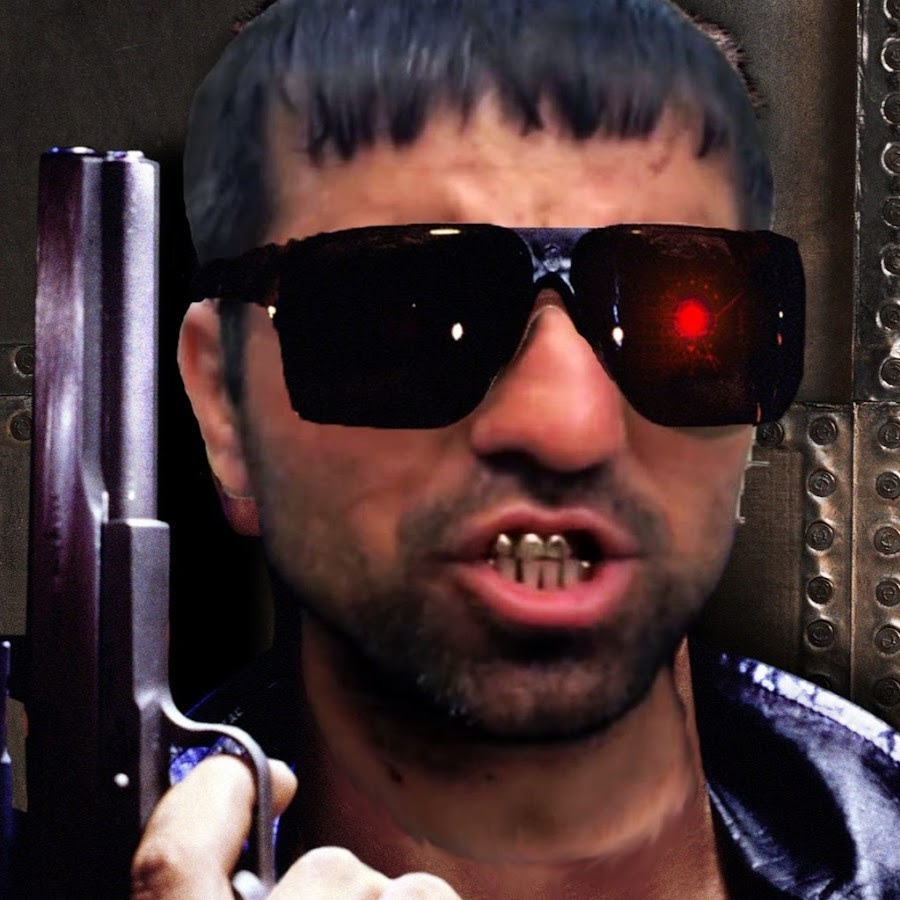
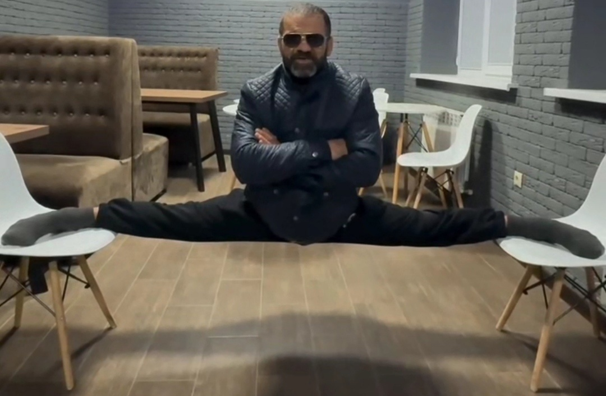

Цитаты дня
О, Салам Аллейкум, ты как спалил гангстера со стажем?
Страх исчезает тогда, когда ты начинаешь делать то, что ты боишься делать, вместо того, чтобы думать об этом. Пабло Пикассоу, Фаус Гёте отдыхает.
Весь мир против меня. Я буду прав. Я вдохновляюсь этим, Ежжи.
На просторах «Нетипичной Махачкалы» обрел популярность один из самых харизматичных персонажей за всю историю Рунета — дагестанец Камиль, больше известный как Кама Пуля. Первые ролики с участием сурового небритого мужчины появились на просторах сети в середине 2014 года. Поблескивая золотыми зубами, Кама изрекал мудрости, достойные Конфуция и древнегреческих философов, сопровождая их неповторимой жестикуляцией.
Одни говорили, что Кама был чемпионом Дагестана по карате и членом Избербашской преступной группировки. Другие называли его одним из самых уважаемых в регионе криминальных авторитетов и утверждали, что на его поведение негативно повлияли долгий тюремный срок и полученные на бандитских разборках увечья. Третьи рассказывали, что Кама был единственным выжившим в некой перестрелке, а свое прозвище получил из-за пули в голове, которую так и не смогли извлечь врачи.
Пользователи давно превратили Каму Пулю в мэм, а его цитаты стали «крылатыми». Некоторым людям симпатизирует его философия. В сети уже появилось несколько приложений для смартфонов, где собраны самые лучшие его высказывания. Миллионная аудитория помогла Камилю выйти из кризиса, и сейчас «старый гангстер» пропагандирует правильный и здоровый образ жизни. Он говорит о том, что нужно быть сильным, смелым, не сдаваться, не опускать руки и всегда достигать своих целей.
